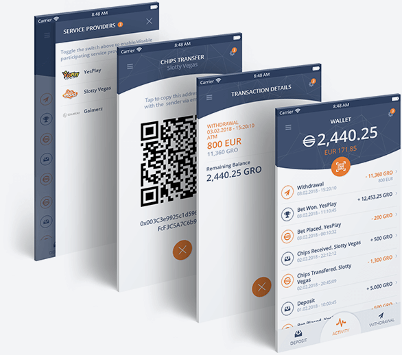

We do not re-invent the wheel, we simply follow the cash.
Most businesses think the Blockchain will change the norm or "disrupt" their economy.
Think again. The reality is 87% of them are fantasizing or simply capitalizing on the trend.
Their businesses will do just fine without a token and the Blockchain. They are jumping on the
bandwagon of soon departing train.
Gron Wallet is a smart way to solve the problem, which costs the Gambling and Betting industry $7.2b per annum. The need for Blockchain, Smart Contract and Network Users Incentives mechanism is obvious and justified. Hence the introduction of our GRO token.
We are not a startup with MVP. We are bringing a multibillion-dollar industry together to combat the issue, which to this day everyone is fighting on their own.
Common industry problems the Operators (Bookmakers/Casinos online) and Players (the consumers of the services) are faced with. Gron Digital has a solution.
Players need to have an approved account with every operator to access their funds. Withdrawing and depositing funds can be a problem with difficult processes in place which interrupts play time in the casino. Who wants to wait a few hours or days for a lucky hot offer?
With no direct access to Player’s Liability Accounts, where collective players funds are saved, large payouts become problematic. Is it worth risking your reputation?
With Gron Wallet, a player funds the gaming transactions with a choice of options, i.e. credit card, bank transfer, crypto exchanges and controls the fund levels at all times.
Gron Digital ensures the winnings and gives operators indirect access to a bigger Player's liability account by providing a decentralized ledger and Bank Rollers funds. Gron Digital Smart contract ensures and controls the tight and verifiable payout of the winnings.
Players playing at more than one casino or sports betting site often need to submit the same KYC/FICA documents over and over to each operator.
Time-consuming and delayed KYC/FICA administration is something operators want to avoid.
Gron Digital manages the KYC/FICA process using technology, the Blockchain and third-party collection and verifications so that players only need send their details once. Operators conditions are fulfilled by getting the right player details, these are provided with permission from the player.
In some cases, players can experience delays in receiving payouts from trusted smaller operators for a number of reasons.
Some operators take time to investigate player queries and may request more information to process payouts. Getting Regulators involved is the last resort and is no longer necessary when the Gron Smart contract is in place. This makes sure that players receive their winnings easily.
Smaller operators no longer have to battle with cash reserves needed for Player's Liability Account. These limitations can cause delays for larger payouts needing assistance with lowering entry-level and maximizing cash flow.
Gron Digital Smart Contract solves both of these problems and acts as an autonomous agent utilizing cryptographically verified code executed on the Blockchain so that winnings are insured, guaranteed and paid instantly. Let Gron Digital do the work with easy-to-audit and transparent transactions.
Exposure of credit card and identity details to many operators puts a player at high risk of being defrauded and not recovering the funds.
High payment solution provider costs, lengthy administration, manual checks and chargebacks still happen often, wasting time and money taking away from profits.
Gron Digital keeps it simple. No Chargebacks. Low transaction costs. Instant withdrawals.
Due to the long processes needed to control abusive and illicit activities, honest players don’t get to enjoy bonuses and promotions which they deserve.
Keeping track of player behavior to assist in managing the effects of abuse is important as misuse of bonuses and “sure bet” situations continue to be a reality for casinos and bookmakers. In most cases, the “learning curve” comes at a high cost to an Operator.
The Gron Digital platform facilitates the tracking of players with Machine Learning and Artificial Intelligence without compromising the privacy of Players. Operators can be alerted to unwelcome Players to protect their business from unwanted behavior.
The success and growth potential of any utility token relies on having a crypto wallet that is easy and safe to use. Our Gron Wallet gives you this security, with the ability to send, receive and store your tokens, where you keep track of your transactions.
Our Gron Wallet is seamlessly used with multiple sports betting and gambling content providers, protecting your credit card details and other sensitive information - thanks to the cohesive integration with leading exchanges. All winnings are credited to your wallet instantly with no third-party involvement. Simply withdraw tokens from your secure wallet, at your convenience.

Hire Gron Digital or community developers in order to create your very own Gambling and Betting portal. Gron Digital offers you a variety of pre-built open source modules and tools to make your dreams a reality.

Gambling and Betting is one of the most lucrative spaces on the net. At Gron Digital we have lowered the entry level to the industry. Learn how you can have your share in the Gaming sector by reading our Whitepaper.

Regardless of whether you are a bookmaker or a punter, you are always the player. What sets you apart from each other is the size of your bankroll, experience and your appetite for taking a risk. The Gron Digital Platform enables peer-to-peer betting, risk sharing, betting exchange and Jackpot-backing.

The Gron Digital eco-system caters for all participants within the Gaming sphere. Odds and results providers, live-in-play scouts, developers, regulators, affiliates and risk-backers are a few examples of role players who are rewarded for providing their services.

Another element of the online operation is the Affiliation program. The affiliate-operator relationship is complex. Continuity, negative balance carry over and reactivated customer ownership are some of the aspects which can be dealt with efficiently by the Gron Digital Platform.

Successful Betting and Gambling operations are dependent on third-party service providers. Reliability and trust come at a high cost to the operator, which often is not justified for a small size entity. With the pay-as-you-use structure, suppliers publish their services on the Gron Digital platform and the Smart Contract takes care of automatic billing.
Gron Digital appreciates the time-to-market concept. We believe reliable and quality products take time and effort to evolve. An integral part of this process is R&D and customer feedback. Gron Digital have developed, tested and operated an array of Gaming and Betting products.

With more than a decade of Gaming experience, the founders of Gron Digital continue to deliver the essence of every online casino, that is - vibrant and splashy content. The Blockchain is finally ready to adopt more than 200 exciting games.

Years of hard work and dedication have yielded a product that is recognized, certified and widely used. A Smart Contract executed on the Blockchain is an ideal candidate in the world of Sports Betting.

Pool Betting is yet another black box for consumers, which is now ready to be solved by the Gron Digital Platform. Our Mobile Application and Self-Service Terminals operating across the African continent exist as living proof of robust and reliable products we have to offer.
+30% bonus offer starts in:
+30% bonus offer ends in:
+20% bonus offer ends in:
+10% bonus offer ends in:
Our journey started in 2012, from proof of concept and MVP, to a fully-fledged and matured product – giving us a 5-year head start. This means that our most time-consuming task is behind us and our vision to bring the Gaming and Betting to the Blockchain is one step away from disrupting this lucrative industry.
Server Based Casino Games Platform was Launched in the South American land-based market. 158 Video Slots & 12 Table Games
Desktop Casino Application. 20+ Video Slots, 4 Video Pokers, Roulette, Black Jack, Texas Hold'em, Baccarat
Sports & Horse Racing Pari-mutuel Betting Application
Protocol and Framework for developers released


Tebogo is a Gaming Industry veteran with 22 years of experience. His career started with Sun International, followed by 12 years in the South African Bureau of Standards as a Gaming Lab Manager. Tebogo is vastly informed in the regulatory and compliance space of the industry. He served as Vice President for BMM Testlabs in both Africa and Europe. Later, Tebogo worked on the Mpumalanga Gambling Board and headed the compliance department in the Gauteng Gambling Board. Today, he pursues his role as CEO of CDP Gaming Technologies.
Dmitry has over 20 years of Business Management experience, coupled with his passion for technology and innovation. He founded Sintez Technologies in 2004, an IT company with offices in South Africa and Ukraine – retaining over 200 developers. Sintez Technologies has assisted several companies, from various industries, in achieving their goal – which is to deliver quality products to their market. Over the years, Dmitry has mastered business processes and the software development pipeline.
Alex is an accomplished software engineer and visionary with 32-years of technical experience. His innovative approach to system’s design allowed him to execute a number of successful projects, some of which were implemented back in 1994. The projects’ robust architecture and 24/7 availability allowed for them to be used to this day. In 2012, Alex shifted his focus from the Financial and Banking sector to Gambling and Betting. From 2015, he has been actively involved with the Blockchain projects.
Peter successfully launched YesPlay in 2015 operating 2 licensed sports betting shops in South Africa. Having noticed the demand for online and mobile betting services his team set about developing and launching the YesPlay.bet website bringing sport betting and lucky numbers to the web. Apart from operating and managing YesPlay, Peter's interests lie in AI and blockchain technologies and their application in the business context.
Wendy has over 30 years operational and business experience – 20 of which are specific to high level Strategic Marketing Management, Communications and Brand specialist experience. She has thorough knowledge and understanding of all aspects of marketing and has specialised her focus in the digital landscape. Wendy’s experience in the gaming industry began in 1991 with Sun International, Tsogo Sun in 1999, and moved to the online gambling industry with Casino Enterprises in 2003. Wendy utilises data driven insights into marketing and business challenges to achieve optimal results and create sustainable solutions.
Irina is a seasoned IT Project Manager who steers projects to success. She is a master of project management and coordination, as she proactively engages with stakeholders and her development team throughout the lifecycle of a project. She ensures that her participation will evolve and optimize a project, as well as improve the customer’s bottom-line. Seeing the team’s hard work come to life keeps her motivated and determined to add to their successful track record.
Sergey is a specialist in retaining and managing clients. His charisma, wealth of product knowledge, experience, patience, and astute nature has helped us retain some of our most valuable customers over the years. It is no doubt that he is a people person and a key component for ensuring efficient, advanced and responsive customer care.
Artur has over 8 years of ultimate experience in Gaming and Betting. Headed the team of developers. Progressed from Senior Java developer to System Architect. Technology enthusiast with an innovative approach and use of technology in gaming. A unique specialist with a mix of technical and deep product understanding.
Having developed and delivered dozens of games, Eugene is a gaming guru! With over 10 years of experience, he is highly knowledgeable and successful in Gaming Development - particularly, aspects surrounding design, architecture and technology choices. Eugene’s deep-rooted understanding of the product enables him to pursue his role as an advisor within the business team.
Vladimir is an accomplished designer with more than 10 years of experience in Gaming and Betting desktop and mobile UX designs. His original creations and exceptional vision makes him a key component when it comes to prospect projects. The last 2 years have tested and proven Vladimir’s ability to lead, manage and inspire a team of successful designers. Prize-winner of a number of Internationally recognised contests.
Sean has over 10 years of experience in professional software development. His career began in technology consulting and research, but he soon discovered that his passion was in software engineering and product development. Sean has applied his technical expertise in multiple domains including fintech, telecommunications and robotics and has led software teams in Africa, Europe and Silicon Valley.
Louis is a Blockchain evangelist. He has been in the Fintech space for the last 5 years – developing and implementing systems that are widely used within the industry. His passion for software development has lead to his devotion to R&D of Blockchain based applications. Louis’s skills form an integral part of the ERC-20 based projects. He is particularly proficient with platforms such as Ubin, Quorum and Ripple Net.
Alex began his career as a Java developer more than 5 years ago. He has been intensively involved in developing mobile products for the online betting sector. Highly proficient in Lottery Products, developed state-of-the-art mobile applications. Alex's proven technical background is efficiently applied in products development for both the online and landbased operations.
Eugene brings a wide range of technical expertise to the team. He has an impressive portfolio of technologies, mastered over the years. His focus is on high-load systems development and Blockchain. Eugene applies his extensive skills successfully in order to implement various innovative approaches within the industry.
From 2015 to 2017, Nick has implemented two of the biggest and most dynamic products in the Betting industry – a Risk Management Tool and a mobile version of a Sports Betting site. He has proven himself to be a skilled, as well as advanced developer, as he continues to develop interactive user interfaces. His meticulous attention to detail reassures that essential requirements will never be overlooked. This instils confidence in the quality of the final product.
André is the Executive Director of International Centre for Gaming Regulation at the University of Nevada, Las Vegas. He worked for the University of Pretoria, Africa Institute of South Africa, Development Bank of Southern Africa, Ernst & Young and the South African Government prior to a longstanding career in gaming. He was appointed to a Commission, aimed at advising the Government on legalisation of gaming in South Africa. He fulfilled his role as CEO of one of the South African provincial gaming boards, whilst serving on the National Gambling Board of South Africa. Later, he was appointed CEO of ZMS. André was then appointed Executive Director of the Alderney Gambling Control Commission. He was the keynote speaker at the first international eGambling Summit held in the United Kingdom in 2006. He gave testimony to the Financial Services Committee of the US House of Representatives concerning the Internet Gambling Regulations Enforcement Act. André was a significant speaker at the American Gaming Association’s 2008 Global Gaming Summit in Las Vegas, and in 2012 gave testimony to the UK Culture, Media and Sport Select Committee regarding their new regulatory framework. André is a former President of the International Association of Gaming Regulators and is an active member of the International Masters of Gaming Law and the International Association of Gaming Advisors.
Walter is a seasoned South African Chartered Accountant with more than two decades experience in executive financial management, investment banking, and advisory services. He completed articles at Ernst and Young in Johannesburg in 1994. Since then he has held many senior positions in the private and public sectors. Notably he was a founding director and CFO at Rand Merchant Bank in Mauritius and Chief Executive Officer of Metalmin Metals and Minerals, a global commodity trading business. Walter has originated, appraised and implemented over fifty project and structured finance transactions in a variety of instruments, sectors and across the African continent with an aggregate asset quantum in excess of US$ 1 billion. He also has considerable experience in private equity, managing an equity portfolio valued at over ZAR 5 billion as well as representing the Development Bank of Southern Africa on a number of Advisory Boards. Walter is an expert in deal structuring, capital raising and financial modelling. He has an extensive history in development finance including early stage feasibility funding and bankability assessments, assurance and compliance. He enjoys contributing to an inter-disciplinary and dynamic team in which evolution and growth are emphasized.
Lucien has been active as an operator and advisor to land-based and online Casino for over 30 years. During this period, he has advised Operators in many countries in Europe, Russia, Latin America, the African Continent and Asia on how to maximize the revenues of the Slots Floor and/or the online Casino. Lucien has also advised many of the leading Suppliers of Electronic Gaming Devices and providers of Gaming Technologies and Games in other Channels, on areas of Game Concepts tailored to different categories of Players. Lucien is probably best known as the founder of The Slot Academy, now called the Totally Gaming. Academy, through which hundreds of Slot Managers and Representatives of Supplying Companies of every continent have been familiarized with the Marketing Strategies and TQM Principles behind running successful Slot Floors and Mathematical Concepts of Games. A speaker for the likes of the University of Reno, Nevada and the Sigmund Freud University, Vienna and a public speaker at many exhibitions at events, Lucien Wijsman is known as an expert in the field of operating Games of Chance both in the brick and mortar and online environments.
As the founder and CEO of Nexus Gaming Intelligence, Igor is a veteran of the gaming industry and has held positions with some of the largest providers of gaming products today. In 2013, he was the recipient of the iGaming Representative of the Year award. A specialist in gaming systems, start-up, operation and efficiency of Online Gaming and E-commerce business models, by expanding product verticals in new and existing businesses. His experience incorporates AMLO, Bonus Abuse, Advantage Play and Affiliate partnerships from both in-depth function perspective as well as management of resource and KPI’s with focus on Customer Service & Operations resource management. His key specialty has been the development of “multi-product” Gaming Platform SaaS solutions for Regulated Markets and individual market requirement; gambling solutions focusing on both online and land-based environments. Igor founded Big Data BI analytic software (and logic models) with key focus on CRM, Churn Management and Customer Reactivation, Macro/Micro Segmentation models and in-depth player management. Igor is a seasoned panelist and speaker, and is regularly seen at EiG, ICE, Slot Summit and GiGSE conferences and seminars. Igor also runs the comprehensive, hands-on Online Master classes organized by Totally Gaming Academy.
Alpheus is a business and technology leader. He has earned recognition for his contributions to regulatory compliance, gaming software development, and management of start-up operations. He played a major role in the development of server-based technical standards. Alpheus excelled in his role as Technical Compliance Manager, where he established South African operations for BMM Test Labs. As a Compliance Product Manager for Bally technologies, he worked with the sales team and clients to develop products for their gaming needs ensuring regulatory requirements at the same time. He has designed and implemented an Internet gambling testing strategy for BMM in various international jurisdictions. Alpheus has managed product compliance of a casino system for Sun International and Peermont groups. Alpheus is currently pursuing his career on the Gauteng Gambling Board. He continues to approach problems from an analytical perspective: as he collaborates with others to design and implement strategies that create revenue for business partners in several sectors.
Rossouw is a founding member of the South African gaming law and compliance consultancy, AG Consulting. Having qualified with a B.A (Hons) in public administration, Rossouw commenced his professional career with the Provincial Administration of the Western Cape Government. He rose rapidly to the position of Chief Director, and in 1997 resigned this position to take up the post of Chief Executive Officer of the Western Cape Gambling & Racing Board, a position that he held for 10 years. As Chief Executive Officer, Rossouw spearheaded the development of the Western Cape Gambling and Racing Board from its inception, into an organisation which was widely respected as being among the best-managed public entities in the country. Under his leadership, application processes for the full allocation of the Province’s five casinos were successfully conducted without legal challenges, together with a plethora of other industry sectors and functions which had not hitherto been licensed or regulated, either in the Western Cape or in South Africa as a whole. He also served as a member of the National Gambling Board of South Africa, and, subsequent to his resignation from the Board in 2007, served as a Director on Boards of various licensed gaming companies, before establishing AG Consulting, in partnership with Alicia Gibson, in 2008.
Alicia is a founding member of AG Consulting, a South African gaming law and compliance consultancy, which was established in 2007 to provide a full suite of custom-made consultancy services to governments, regulatory agencies and private gaming industry stakeholders. She holds the degrees of B.A (Hons) and LL. B from the University of Cape Town and is a former District Court Prosecutor and State Advocate of many years’ standing. She was also the first woman to have been appointed to the district court criminal bench as an additional magistrate in Cape Town in 1990. She is an admitted Advocate of the High Court of South Africa. Alicia was the Manager: Legal Services of the Western Cape Gambling & Racing Board since its inception in 1997, when provision was made for the licensing and regulation of gambling (other than betting on horseracing) for the first time. She held this position for ten years, and during this period played a key role in steering the focused and effective development of gaming legislation, both in the Western Cape Province and in South Africa as a whole. During this period, she also served as Secretary to the International Association of Gaming Regulators (“IAGR”), until her resignation from the Board in 2007. Immediately prior to this, Alicia served as the Acting Chief Executive Officer of the Western Cape Gambling and Racing Board, before resigning to form AG Consulting.


Become an Affiliate
Community Chat
Subscribe